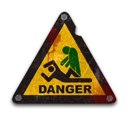

Te aseguro que no ha sido por la picadura de un mosquito, ni mucho menos la de un murcielago, aunque suene a paradoja el covid comenzo con la mordedura de un humano a un murcielago, ya tiempo ha pasado y esto nada que se acaba,
por eso estamos tomando las precauciones por si de pronto tu abuelita decide salir a comernos...
Este proyecto nace para hacer de los lugares de la ciudad de CARTAGENA un poco mas atractivos, un poco de humor no nos vendría nada mal.
Aunque el proposito de este sitio WEB es mostrar un mapa de la ciudad de cartagena, aún se encuentra en desarrollo, a profundidad y en un futuro no tan lejano y más cierto que el mismo apocalipsis podras encontrar y seleccionar los diversos sitios, si estas en busqueda de suministros, refugio, etc.
